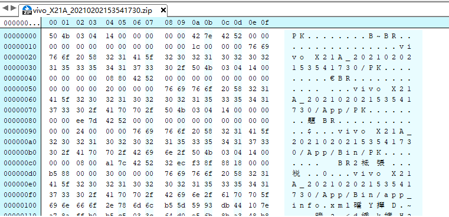
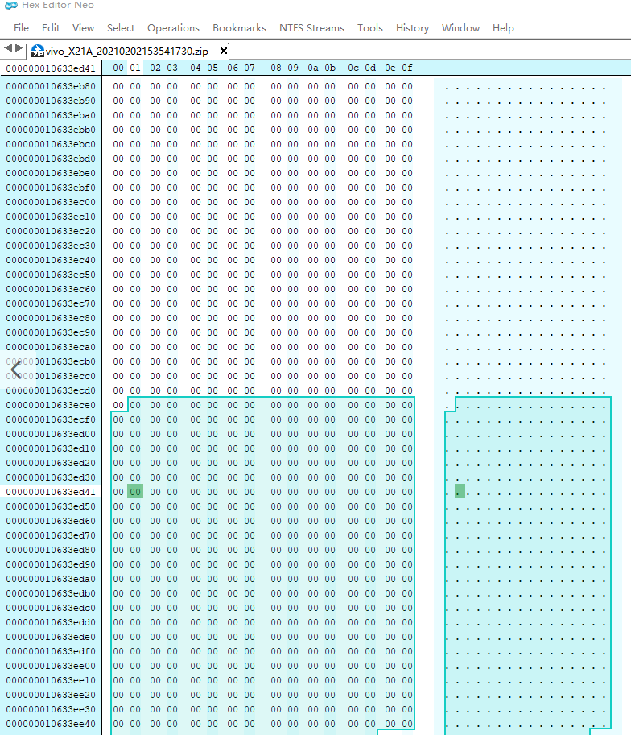
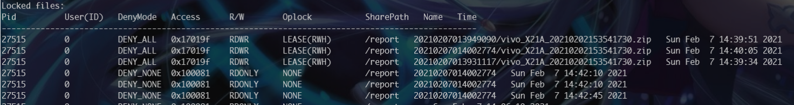

最近的项目出现了samba的文件拷贝的BUG，项目主要流程是：windows端通过samba协议拷贝一个文件夹到Linux的samba server上，Linux的samba server所在节点运行着一个Python程序，它监听者文件大小的变化，一旦文件夹大小60秒不变，就判断文件上传完成，开始对文件进行处理。
起初上传包含大量小文件的文件夹并没有出现问题，但是传大文件（压缩包）的时候，会发现文件损坏无法解压。起初我以为是压缩包太大，多个任务的压缩包一起解压造成内存不够，于是设置了失败重新解压的机制。但是后来发现实际上一个大文件也会造成解压失败，日志显示重新解压了几百次，还是失败。之后又是设计解压重试时间间隔，还是失败。于是把传上去解压失败的压缩包拷贝到本地，发现打不开，文件真的损坏了！于是突发奇想，用Hex Editor查看了一下文件结构：

一看果然大有猫腻，前面部分数据是正常的，而后半部分全是00

我忽然就意识到这是文件没有传完，于是用smbstatus命令查看了samba服务状态，果然文件还被占用着，说明拷贝并未结束：

再次对比了本机的正常压缩包和损坏的压缩包，发现大小竟然也一致。结合文件尾部的00，说明文件可能是先分配空白空间，再顺序写入的，所以大文件的拷贝会很长时间都不会发生大小变化，让Python程序误以为上传已经完成。为了验证这个猜想，我又准备了一个40G左右的压缩包test.jar，用以下程序试试输出文件大小：
import os |
上传文件后立刻启动脚本，打出的日志如下：size changed from 0 to 43234952351
size remain unchanged for 0 sec
size remain unchanged for 2 sec
size remain unchanged for 4 sec
......
日志显示从第一秒文件大小就已经是43234952351字节（42G），之后文件大小从没变过，说明：samba拷贝文件的过程存在某种预分配（pre-allowcate）策略。
查到Samba的拷贝机支持确实如此：https://wiki.samba.org/index.php/Linux_Performance，预分配可以有效减少碎片化问题。
是否只是samba的拷贝文件存在这只机制呢？再Linux上用copy命令从其他目录拷贝文件到当前目录，Python监听文件大小变化的日志如下：size changed from 0 to 121765888
size changed from 121765888 to 386793472
size changed from 386793472 to 650248192
size changed from 650248192 to 915275776
size changed from 915275776 to 1179254784
size changed from 1179254784 to 1440612352
size changed from 1440612352 to 1705377792
size changed from 1705377792 to 1969356800
size changed from 1969356800 to 2234384384
size changed from 2234384384 to 2499149824
......
文件不再是从一开始就固定大小的了。同理测试windows：size changed from 0 to 43234952351
size remain unchanged for 0 sec
size remain unchanged for 2 sec
size remain unchanged for 4 sec
size remain unchanged for 6 sec
size remain unchanged for 8 sec
size remain unchanged for 10 sec
文件大小也是复制时就预先分配好的！说明文件的复制策略也许和平台/文件系统相关。Ext4采用的Extending Allocate策略相对于NTFS的Preallocate更容易产生碎片化问题。
连续分配的好处是会让分配的block较为集中，减少机械硬盘寻道的时间。
参考文献
- https://www.systutorials.com/docs/linux/man/8-vfs_prealloc/
- https://www.samba.org/samba/docs/current/man-html/smb.conf.5.html
- https://linux.cn/article-10000-1.html?pr
- https://blog.csdn.net/younger_china/article/details/22827341
- https://baijiahao.baidu.com/s?id=1626865145881274269&wfr=spider&for=pc
- https://blog.csdn.net/tongyijia/article/details/52832236
- https://samba-technical.samba.narkive.com/ceHg4eiL/preallocated-file-size